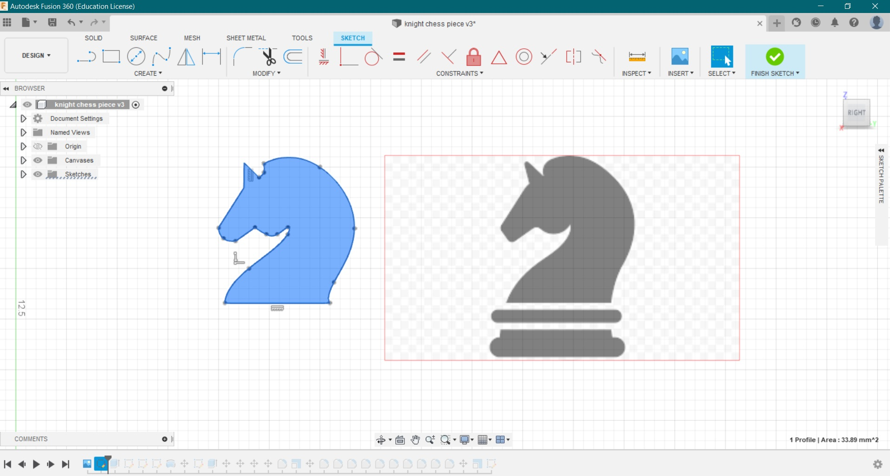
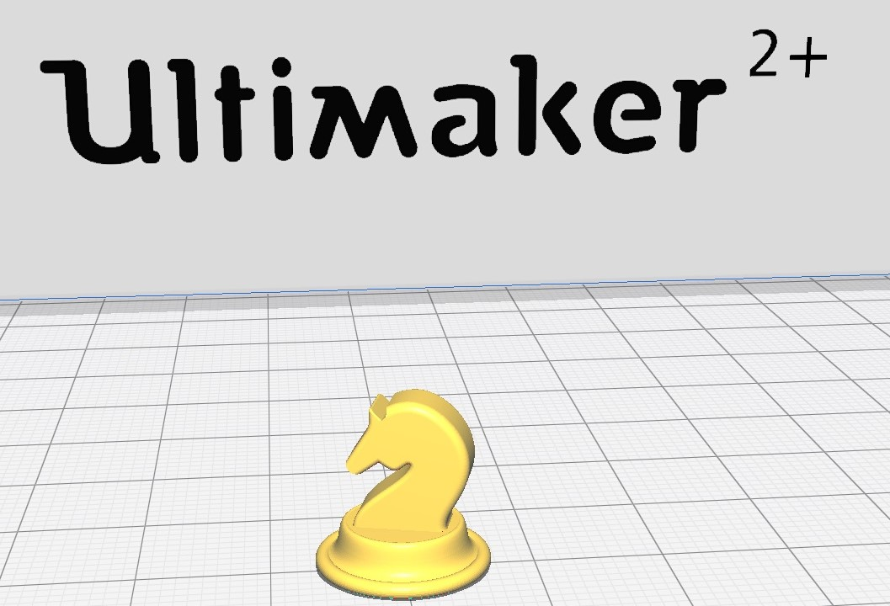
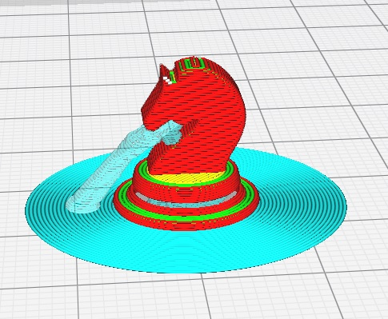
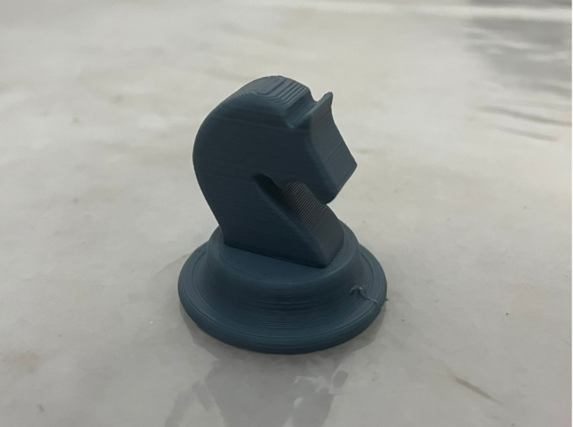

3D PRINTED KNIGHT CHESS PIECE
We were tasked with creating a knight chess piece using a 3D printer. The process included designing a 3D prototype using Fusion 360 by Autodesk, then using CURA to slice the STL file so it will be ready for printing, followed by exporting the file and finally 3D printing it using the Ultimaker 2+ in the workshop.
In order to create the base of the chess piece, I first used the “create” function to draw half of the base as a 2D sketch, and then completed the entire base using the 'revolve’ function, resulting in a circular and hollow 3D base. The upper part of the chess piece, consisting of the knight’s head, was formed using a transparent canvas. This was the canvas used and the 2D sketch that I made.

I first followed the outlines and sketched out a simplified 2D design. I then proceeded to extrude the 2D sketch to form a 3D head for the chess piece. I then joined the two parts together to form a complete knight chess piece. After that, I went ahead and did some minor editing using the “fillet” function to smoothen the edges so that the chess piece would look better aesthetically.

Above are pictures of the base formed using the "revolve" fucntion and the extruded sketch of the knight's head.
And this is the completed 3D model on Fusion 360.
After the model was complete, I exported it to CURA, which is a slicing application for 3D printers. Here is how it looked it on the application before and after slicing.


These are the settings that were used for the completed model:
Printer: Ultimaker 2+
Material used: PLA
Nozzle size: 0.4mm
Extrude: 0.2mm
Layer height: 0.25mm
Wall thickness: 0.8mm
Infill density: 10%
Infill pattern: grid
Infill layer thickness: 0.2mm
Generate supports: enabled
Support overhang angle: 50 degrees
Build plate adhesion: brim
The time taken to print was 45 minutes. It was measured to be approximately 3.2cm in height (including base) and 1cm in width (knight head). The base was measured to have a diameter of 3.4cm.
This is the finished 3D printed knight chess piece! 😊
